Hang on a second… An art article written by a programmer? How do you dare? This is madness
Well yes, so deal with it.
Life is hard for us programmers, who can’t always find a committed artist (rare species) to work with in our projects. Yet we stand as heroes, eager to create games. It saddens me how often we see ourselves forced to produce low quality assets, I"d never call that art. Actually, it’s more appropriate to address them as utter crap. Cry no more, fellow coder, because it’s all about workflow.
Are you telling me I can create decent looking characters and environments? But I suck at drawing!
Indeed, you probably do suck at drawing, just as much as I do. However, you"d be surprised about how much can be achieved with a few tricks, the right tools and an a sensible scope. Please, do yourself a favour and abandon the idea of creating cutting edge 3D, hyper realistic characters and stick with more simple, colourful and cartoon 2D elements. With a considerably small time investment, you"ll be able to make games that don’t look as if they were created with Ye Olde Microsoft Paint. No eyes have to bleed anymore! Yay!
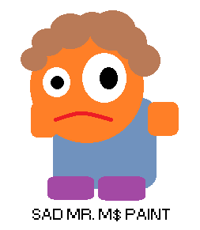
In order to get to where I now stand, I’ve had to go through a lengthy and painful try/error process. Maybe I can spare you some, that"d be nice, wouldn’t it? Here’s a disclaimer though, this is one of the many ways of doing things. I"m sure a real artist would kick me in the balls upon such an insult to his profession, but hey, it has worked for me so far. Just check Evolution, my Ludum Dare #24 entry. Hideous playability but decent looking for a 48h jam. I"m going to use it as an example throughout the article, feel free to grab any ideas you fancy, add your own and ditch the rest.
The initial sketch
Firstly, let’s make the assumption we"re working on a character for our game, although this could perfectly apply to environments as well. The very first step is to draw a basic sketch on paper. I"m fully aware that drawing on paper in a world of graphic tablets might strike some people as old school. Nevertheless, paper is just simpler and cheaper, a good fit for our purposes.
A rule of thumb would be to stick to basic shapes, keeping in mind at all times a lovely cartoon style. Trying to emulate reality will surely result in disaster, in turn, shamelessly making things look funny could easily save the day. Don’t worry if you can’t go any further than poor stick men, you stand a good chance by choosing minimalistic designs. Look at De Blob’s main character! It’s basically made out of stylized circles and rectangles. Yet all the critics said it’s a visually interesting game. Simplicity is your friend, embrace it and it"ll hide your lack of talent.
Once you’ve finished your sketch, it’s time for you to scan it. In the absence of a proper scanner, you can always take a picture. Don’t worry if it’s your phone’s camera, we"ll only use it as a reference so that"ll suffice.
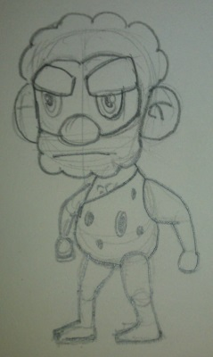
Let’s talk vectors
Hold on, don’t go fire up Photoshop CS [insert version number here] just yet! That won’t be necessary. We"re going to adopt a vector based approach using the open source solution Inkscape. Beware! For the beautiful math behind Bezier curves shall serve us as disguise for our lame sketch. Elegant and stylized lines, simple shapes and the colourful palette. I love it.
Now it’s a good time to mention that my workflow has been highly influenced by the 2D game art for programmers blog, which provides numerous techniques to easily create assets using this sweet piece of software. Seriously, if you want to get started with this tool, check it out now. When I went through his very first tutorial, which only consists of making a funny looking alien face, I couldn’t but be amazed at the ridiculous effort/outcome ratio.
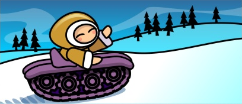
The principle behind this process only requires a little bit of practice. We programmers, love algorithms, so I"ll explain all you need to know using a Python like pseudo code snippet.
import Inkscape
import Awesomeness
# Open Inkscape
inkscape = Inkscape.newDocument()
# Prepare the awesomeness (patience and practice)
awesomeness = Awesomeness.bringItOn()
# Create a layer and import our sketch, use it as a guide
sketchLayer = inkscape.createLayer("sketch")
sketchLayer.loadBitmap("sketch.png")
# For every movable part in our character (further animation)
# Create a layer and draw it using vectors following the guide
for part in character.parts():
partLayer = inkscape.createLayer(part)
partLayer.setAlpha(0.5)
awesomeness.drawBodyPartUsingGuide(sketchLayer, partLayer)
# You should really save in between too, just in case 🙂
inkscape.saveDocument("character.svg")
Now we"re talking, aren’t we? That’s right, create a layer for every animated body part in your character, say head, torso, legs, feet, arms… The granularity depends on the desired level of movement detail. However I"d advise you to keep it simple at first. Set the layer alpha transparency to something less than 1.0 so you can see your reference underneath it. Now listen, this might sound trickier than it really is, you just need to practice. Use circle or rectangle elements to model your character’s body parts, convert them to paths and work with the Bezier nodes to adjust the shapes to the correspondent outline. If you"re just staring at the screen with no idea of what I"m talking about, please go to 2D game art for programmers, follow the first articles and you"ll see the light.
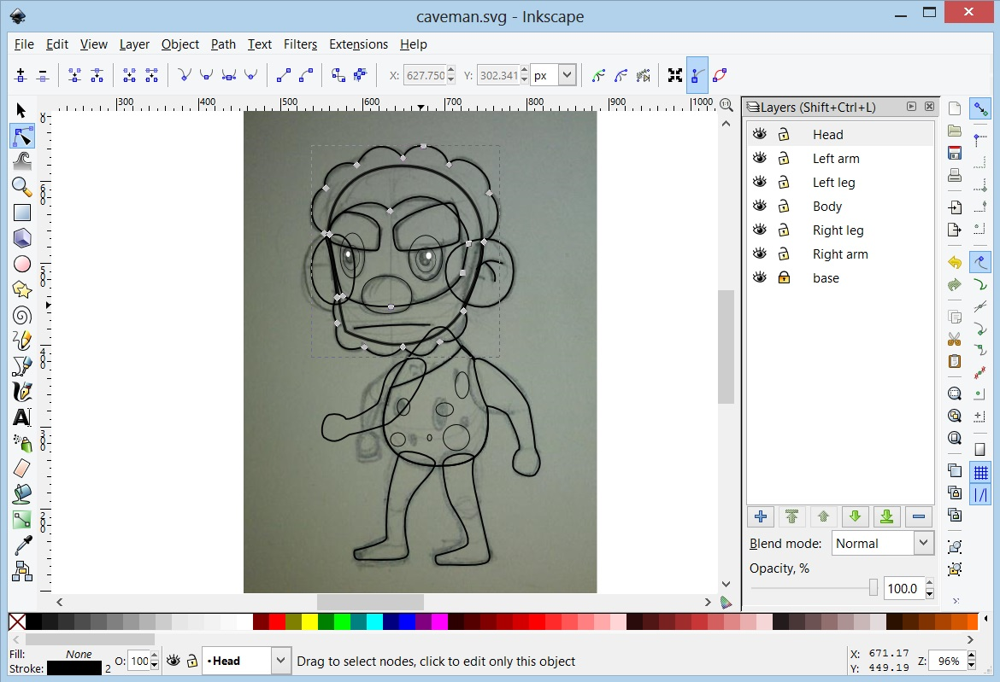
Having finished the basic outline, you can start worrying about colour. Use bright but not too intense tones and the result will be noticeably better. Things like (0, 0, 255) for blue are strictly forbidden. A good idea is to grab some image as a reference and copy the colours, or use some of the multiple web design oriented palette creators out there.
Moving onto shading. You"ll excuse me for redirecting you once more to 2D game art for programmers. There you can get ahold of some basic shading techniques, believe me, some shine here and a shadow there, will completely transform your creation. As far as I"m aware, the principle is straightforward. Position an imaginary light source in your scene and try to figure out, with a minimalistic approach in mind, how would it affect your newly born creation. Add more bezier magic and paint it slightly brighter or darker than the base. Iterate, play with it until you"re satisfied.
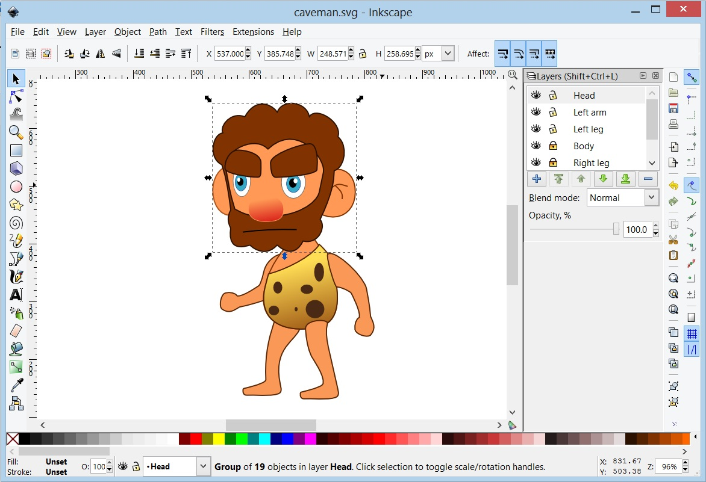
3, 2, 1… Action!
Depending on the game you have in mind, you might not need animations at all! In that case your character would be perfectly ready for production use (happy face). Otherwise, you"ll need to export every body part as a separate PNG file. The size doesn’t really matter but it’s preferable to overshoot the resolution rather than falling short, downscaling algorithms are decent nowadays. Rest assured, once you export the first part, Inkscape will keep the aspect ratio and proportions of all the others.
We could animate our character by moving all its parts little by little and exporting every frame by hand from Inkscape itself, although it pains me just to think about it. So tedious! Instead, we"ll use some 2D animation software to set keyframes with different poses so its tweening engine can work out the rest. Adobe Flash CS can easily do the job but if you"re looking for an inexpensive solution, Synfig studio is worth checking out. Last time I took a look, it lacked features but our requirements are more than covered with either.
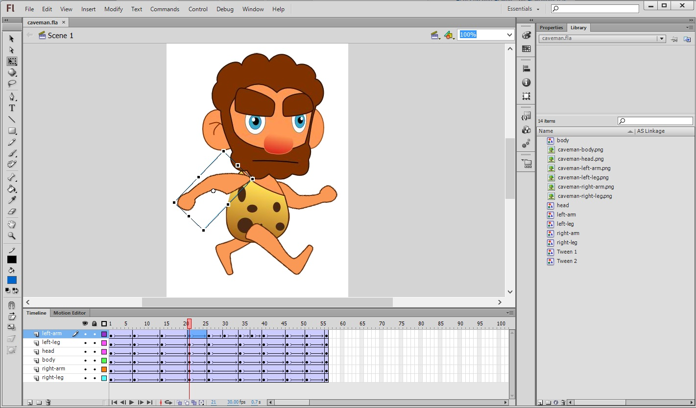
Regardless of your choice, the algorithm here is simple too! We"ll explain a walking cycle as an example. Proceed as follows:
Import each body part in a different layer.
1st keyframe: configure the parts so the character stays in an idle pose.
2nd keyframe: character with its right leg and arm aiming forward while the left arm and leg are left behind.
3rd keyframe: back to idle pose.
4th keyframe: a reverse version of the second keyframe.
5th keyframe: back to idle.
Create motion tweens between keyframes, the software will fill in the gaps.
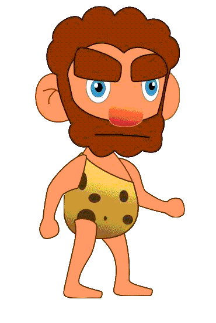
You"d be surprised at the amount of existing literature on walking cycles and I know I"m not being accurate, but this could get you started. Decomposing movement in keyframes is not easy peasy. Nevertheless, you should always try to avoid visual fidelity. Look at games like Super Mario, they"re extremely simplistic and full of metaphors. Mario’s jumping animation could have three frames and still looks good! They don’t try to model reality, they don’t need to and neither do you.
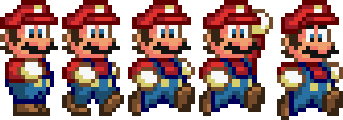
When you export the resulting animations you"ll probably get a ton of individual PNG images which will make your engine very sad.
Create your sprite sheet
Animated characters are usually stored as sprite sheets containing all frames of every animation. Offtimes, you"ll come across with several characters gathered in a big sprite sheet. This reduces file access times and makes rendering a lot faster because you don’t need to be switching between textures all the time. The renderer will draw different portions of the same texture lighting fast and everybody happy.
Does that mean I need to merge the countless PNGs by hand?
Luckily, we can count on the wonderful Libgdx TexturePacker GUI to do the job. It’s free, open source and dead easy to use it. It has a few parameters you can play with, but nothing complex. Grab it and create your awesome sprite sheet.
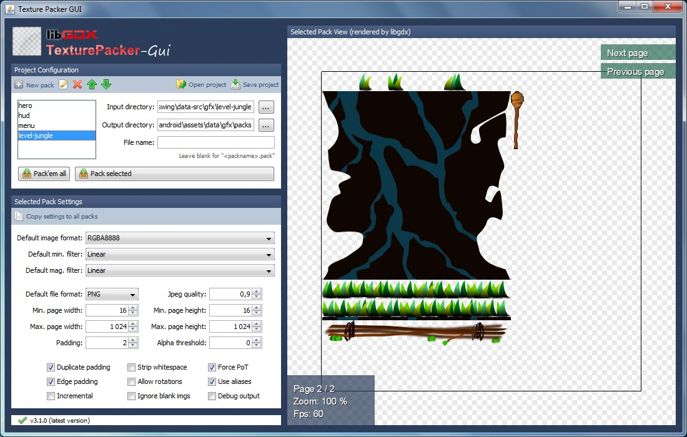
This is it!
Oh boy that was a long article! Since it took me a long time to figure this out, I thought it was worth sharing some of that experience with my fellow coders. It"d be truly awesome if someone left a comment saying how wrong I am along a suggestion on how to improve my art “algorithm”.
The HTML5 version of Freegemas is a project I’ve wanted to get around to finish for a long time. Finally, it greatly pleases me to say, it’s done and you can play it right here, right now.
Freegemas HTML5 runs on any browser that supports WebGL. If you"re an unlucky Internet Explorer user, you then deserve to be deprived of the joys Freegemas has to offer. Anyways! As some of you may already know, my work here consisted in simply porting the original Gosu game to Java and libgdx so it"d run on JVM desktops and Android. At that point in time, libgdx HTML5 support was on the works which explains why there wasn’t a browser release in the first place. Luckily enough, this is not the case anymore.
With libgdx’s magical GWT backend up and running, deploying the WebGL version wasn’t too much of a headache. Nevertheless, I"ll shamelessly count it as my #OneGameAMonth January project. Truth be told, I did improve performance quite a bit after taking a look at the VisualVM profiling tool, which will feed a future article. If my current knowledge of the Java language is poor to say the least, when I first released Freegemas, it was just hideous. As a consequence, memory allocation was running a bit wild.
Your quest is to try to create one new game each month. This challenge is meant to help you on a personal level. There are no prizes, signup fees or rules. It might sound crazy optimistic, but you CAN do it.
These are the opening lines on the One Game A Month website, an initiative by Christer Kaitila aka @McFunckypants (author of The Game Jam Survival Guide). I came across this insane quest just over a week ago and I’ve given it a lot of thought before accepting it. No doubt, it’s a ton of work but it could have an immensely big educational power if used right. By definition, it gives you 12 attempts to try completely new things!
I sincerely believe it to be an accomplishable task, providing that each game is not over scoped. Taking into account weekends away, important events and workload at the office won’t be easy, but that doesn’t mean I shouldn’t try! Hell, may this post serve as a shameful proof of my failure shall that come to happen. The fact that game jams, ports and prototypes count, will certainly make the process less painful.
Conveniently, this comes at a time when I wanted to try learn new things such as AI techniques or some graphics programming (which I, shamefully, know nothing about). One Game A Month could be seen as the perfect way of keeping myself engaged and highly motivated.
Motivation! This ties with the super awesome online platform on which One Game A Month is built. @McFunckyPants has shipped some sort of gamification system where the user creates a profile an earns experience points by submitting games and helping other people out. Furthermore, there’s a gamedev partner search system where participants can look for registered coders/artists to team up with. I was amazed at the massive amount of work put into this for pure gamedev love. Thanks a lot for that! The Twitter community is also strong and the retweet bot makes it easy to meet new people and their projects.
Like I said, I love it! It’s pure community spirit.
There will be news on the January project soonish. In the meantime, I"ll just leave you with the keynote video.
Creative people usually make a big deal out of authorship and honestly, who can blame us? We"re passionate about our work! Producing something that doesn’t entirely suck entails sweat, tears and numerous sleepless nights. The open source world is inherently tricky and raises many concerns regarding ownership.
Open source is a tradeoff
The story of our lives isn’t it? Making your project open source is a tradeoff. On one hand you are more likely to achieve certain level of exposure. You"ll ask questions on StackOverflow, publish your progress under the showcase category of the engine you"re using and chat with other devs on an IRC channel. Being active in a community where people share their love in source code shape is wonderful and enriching. Who knows? Maybe a prospective employer thinks your coding style is “elegant” after browsing your online repository. True story.
On the other hand, it’s understandable to fear hosting your code where it can be checked out by anyone and be claimed as theirs. Especially knowing they could shamelessly use it for commercial purposes even though your license explicitly forbids it. Horror stories where interviewers found out their candidates were presenting someone else’s code as theirs are widely known. Yes, shame on them!
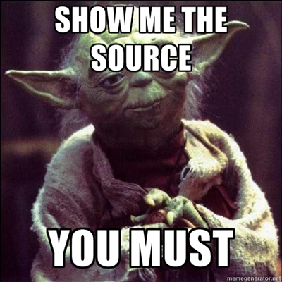
Let’s first assume your rent doesn’t depend on people buying what you make. Unless you have an alternative business model such as providing an additional service, logic would slap you in the face. However, if this is something you"re making to boost your portfolio or just for fun, read on and you"ll find a few ways of making sure you keep the ownership of anything you publish, absent doubts.
After taking some precautions, making open source software really pays off.
Attach the license
First of all, you must make clear which license your code sweetness is published under. A good practice is to attach an AUTHORS along a LICENSE file in the main folder of the repo. Even though many people overlook this, every single file of code should contain a header summarizing that license. Shall we look at Sion Tower as an example of project published under GPL 3? Here’s its LICENSE file and the beginning of the CollisionManager.h file.
/*
* This file is part of SionTower.
*
*
* David Saltares Marquez (C) 2011
* <david.saltares@gmail.com>
*
*
* SionTower examples are free software: you can redistribute it and/or
* modify it under the terms of the GNU General Public License ad
* published by the Free Software Foundation, either version 3 of the
* License, or (at your option) ant later version.
*
* SionTower examples are distributed in the hope that it will be useful,
* but WITHOUT ANY WARRANTY; without even the implied warranty of
* MERCHANTABILITY or FITNESS FOR A PARTICULAR PURPOSE. See the
* GNU General Public License for more details.
*
* You should have received a copy of the GNU General Public License
* along with SionTower examples. If not, see <http://www.gnu.org/licenses/>.
*/
Obviously, you don’t need to use GPL 3 necessarily, just make sure you attach the corresponding text of your license of choice.
License? Check.
Some people couldn’t care less about software licenses, fair enough. So… Shall we move on to the next point?
Run away from Dropbox! Use a version control system
Possibly, the most important golden rule of all is to keep track of your work’s history. If you host your code in Dropbox and then share the link, you"re doomed. The second someone asks for proof you’ve written it, you"ll have to go home and cry. The answer is simple, use version control. To be honest, why the hell wouldn’t you be doing that anyway Let’s put flame wars aside, SVN, Git, Mercurial or any other would be perfectly valid. Backups are built in, you can revert changes and what matters to us now, you get a full history of everything that’s happened.
I know for a fact that employees check your projects" history to prevent people stealing code from other sources without even knowing what they"re doing. Being able to reuse and adapt code is excellent and it’s highly appreciated, but you need to roughly understand what you"re dealing with.
Write a dev blog
Finally, it"d be a brilliant idea to write a development blog where you explain your progress. Not only it serves as a backup log, it’s the ultimate proof you fully understand the details of the problem being tackled. Actually, it’s beneficial for so many other reasons as it also reinforces the impact your project has in the community and increases your online presence. Key facts.
In my humble opinion, sharing your code can bring you happiness in form of acknowledgement, personal enrichment and, why not, professional success. You just need to be aware of the caveats and take reasonable precautions.
Disclaimer: this text is aimed at games programming beginners.
Diving into games development for the first time is exciting but offtimes confusing, a great piece of advice would be: just make games. Get things done, period. I’ve often found myself researching which available technology would suit my requirements best, as if I needed a sophisticated tailored tuxedo. The fear of finding a dead end was as powerful as counterproductive. Such a time wasting approach.
What’s the most powerful games framework out there? Should I learn a new language to start making games?
Stop it.
Needless to say, you"ll make mistakes along the way and that is not a stigma we"re going to get rid off anytime soon. When I was working on my final degree project, I happened to realize quite often I needed to rewrite a whole subsystem from scratch (sad face) but that’s part of the learning process. Spending weeks going through feature lists of well advertised frameworks you most likely don’t understand isn’t. Take this as a piece of advice to help you stay focused on what really matters, creating games.
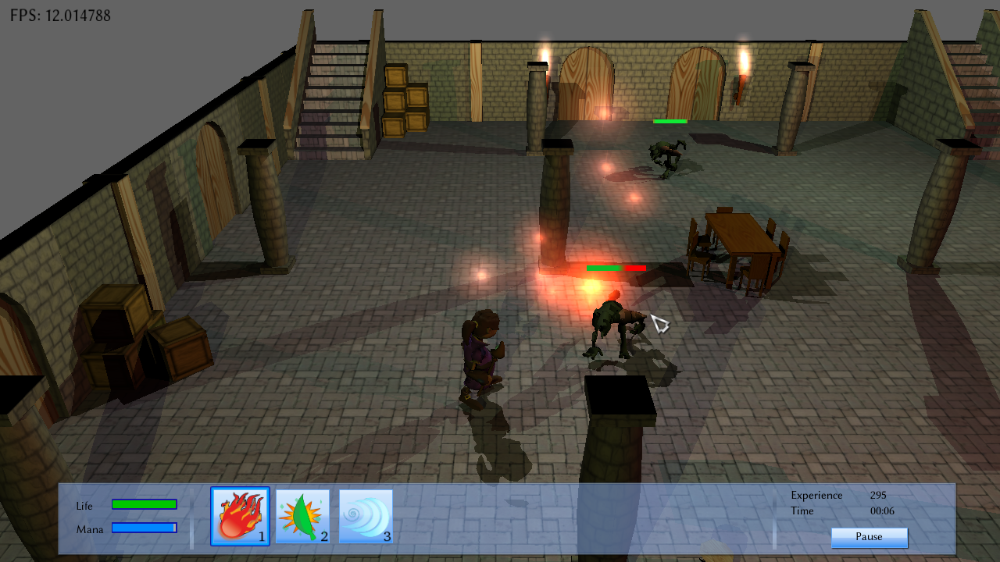
KISS (Keep It Simple, Stupid) is a principle to live by.
This field’s learning curve is steep enough for us to try complicate things any further. If you"re already half decent in a certain language, don’t try to learn a new one with the sole purpose of using a specific engine. Beware! It’s dauntingly easy to fall for this.
A couple Google or Stack Overflow queries will suffice to discover a suitable game engine that gets along with your language of choice. Be almost certain that it"ll feature everything you need and more. If you think that being able to use the latest computer graphics algorithm is important, you"re wrong. Tetris, R-Type, Snake and the like are encouraged as first projects and they don’t need to be fancy at all. Once again, put everything else aside and push forward to complete it.
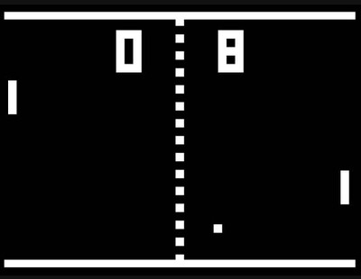
After finishing a couple of small projects you should ask yourself the following: are you in this for fun? In that case, you can stick with the environment you"re most comfortable with. Keep producing awesome games, no pressure! However, you might be aiming at making a living out of it. When the latter applies, learn new languages to broaden your skill set bearing in mind that proficiency in C++ is paramount.
Summarizing, unless you code in Brainfuck, there are plenty of valid tools that will provide you with more power than you could possibly use.
Still skeptical? Examine the showcase forum of each one of them, you"d be surprised.
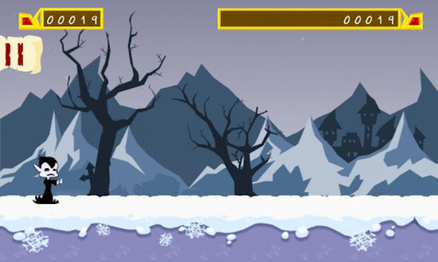
Actually, the only thing to be concerned about is whether the candidate is well documented and counts with an active community or not. Watch out for niche and cryptic technology. Fortunately, those are easily to spot by paying their online platform a quick visit. Excellent, now you will enjoy the wonders of a helpful bunch of fellow coders when you get stuck.
Wrapping things up, are you still desperately looking for the ultimate panacea? Don’t worry too much and just make games.